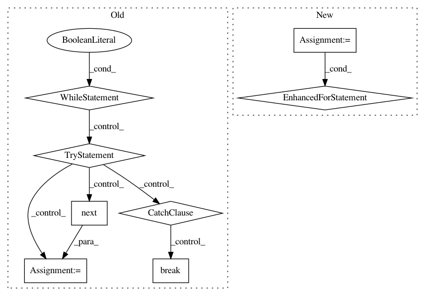

babf7c9f50282143ab8efee96a587bf5cb74123f,chainercv/evaluations/eval_semantic_segmentation_iou.py,,calc_semantic_segmentation_confusion,#Any#Any#Any#,6
Before Change
gt_labels = iter(gt_labels)
confusion = np.zeros((n_class, n_class), dtype=np.int64)
while True:
try:
pred_label = next(pred_labels)
gt_label = next(gt_labels)
except StopIteration:
break
if pred_label.ndim != 2 or gt_label.ndim != 2:
raise ValueError("ndim of inputs should be two.")
if pred_label.shape != gt_label.shape:
raise ValueError("Shapes of inputs should be same.")
pred_label = pred_label.flatten()
gt_label = gt_label.flatten()
mask = (gt_label >= 0) & (gt_label < n_class)
confusion += np.bincount(
n_class * gt_label[mask].astype(int) +
pred_label[mask], minlength=n_class**2).reshape(n_class, n_class)
return confusion
def calc_semantic_segmentation_iou(confusion):
After Change
gt_labels = iter(gt_labels)
confusion = np.zeros((n_class, n_class), dtype=np.int64)
for pred_label, gt_label in six.moves.zip(pred_labels, gt_labels):
if pred_label.ndim != 2 or gt_label.ndim != 2:
raise ValueError("ndim of inputs should be two.")
if pred_label.shape != gt_label.shape:
raise ValueError("Shapes of inputs should be same.")
pred_label = pred_label.flatten()
gt_label = gt_label.flatten()
mask = (gt_label >= 0) & (gt_label < n_class)
confusion += np.bincount(
n_class * gt_label[mask].astype(int) +
pred_label[mask], minlength=n_class**2).reshape(n_class, n_class)
for iter_ in (pred_labels, gt_labels):
// This code assumes any iterator does not contain None as its items.
if next(iter_, None) is not None:
raise ValueError("Length of input iterables need to be same")
In pattern: SUPERPATTERN
Frequency: 3
Non-data size: 8
Instances
Project Name: chainer/chainercv
Commit Name: babf7c9f50282143ab8efee96a587bf5cb74123f
Time: 2017-06-01
Author: yuyuniitani@gmail.com
File Name: chainercv/evaluations/eval_semantic_segmentation_iou.py
Class Name:
Method Name: calc_semantic_segmentation_confusion
Project Name: chainer/chainercv
Commit Name: 198ea427dbfb493f4218c88e9d96d7aae8440d19
Time: 2017-05-30
Author: Hakuyume@users.noreply.github.com
File Name: chainercv/utils/iterator/apply_semantic_segmentation_link.py
Class Name:
Method Name: _apply
Project Name: chainer/chainercv
Commit Name: ab46d2f28d8e522c5aa6ed26c53b296c51973433
Time: 2017-05-30
Author: Hakuyume@users.noreply.github.com
File Name: chainercv/utils/iterator/apply_detection_link.py
Class Name:
Method Name: _apply